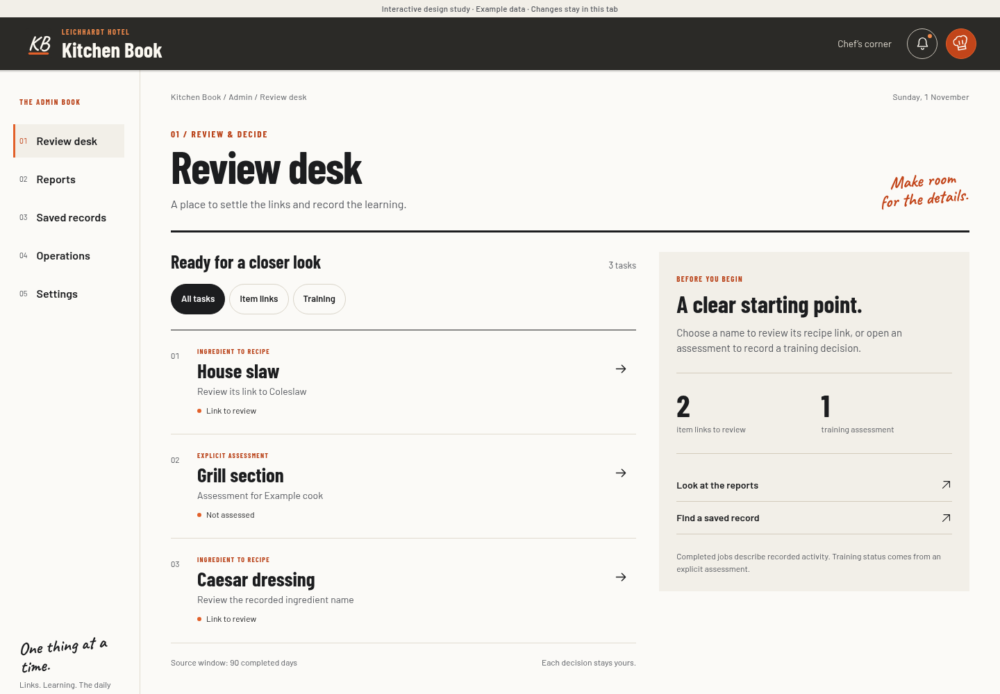
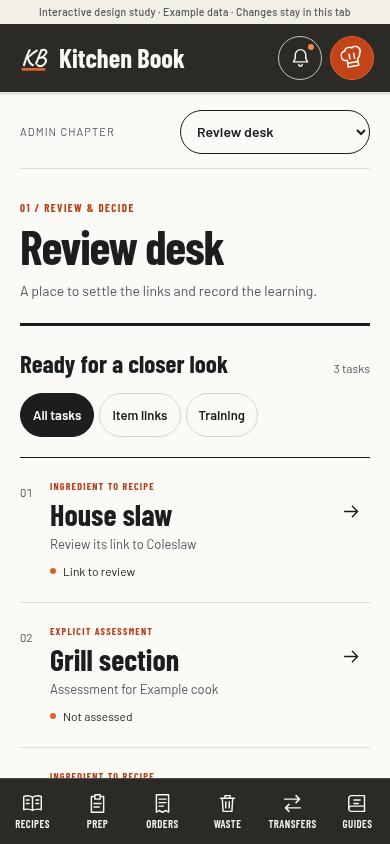
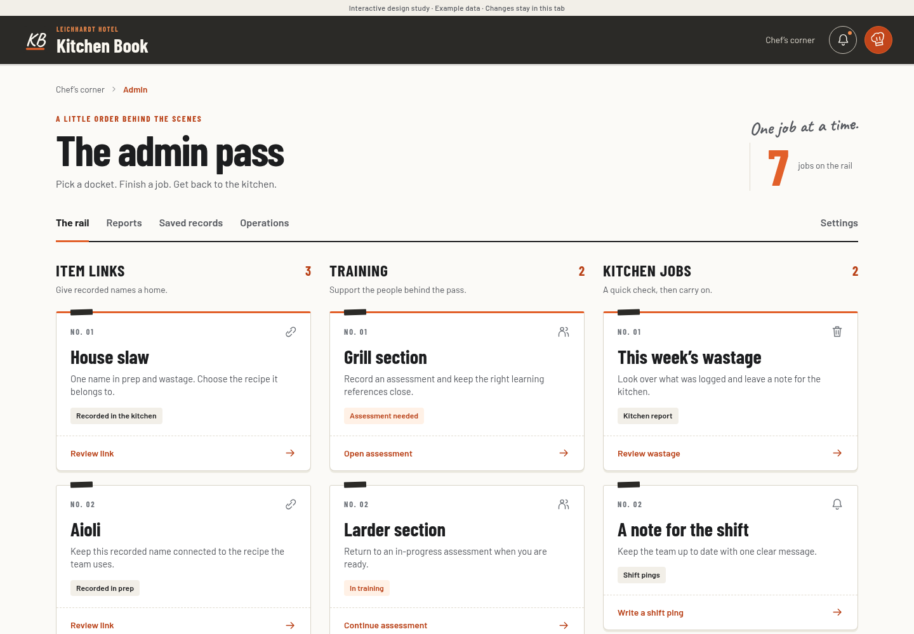
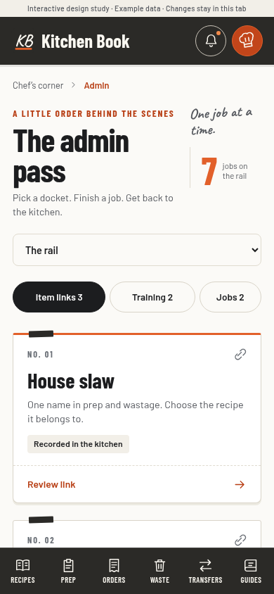
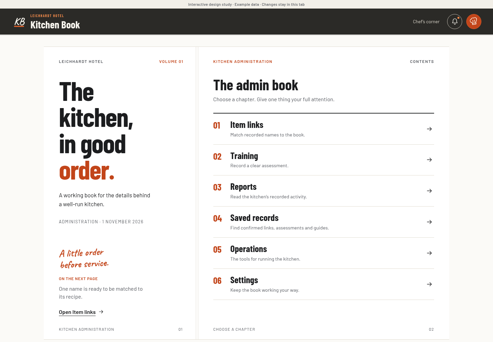
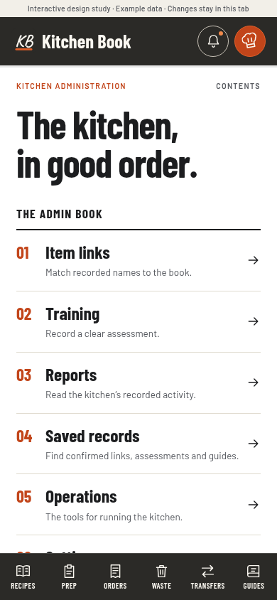

A
The Chef’s Desk
Calm, clear, familiar · Recommended

A quiet workspace
A chapter rail, a clear list and the details beside it.

Best for everyday admin and repeated reviews.More structured; strong context.
Leichhardt Kitchen · Three admin design drafts
The same warm paper, charcoal, orange and kitchen typography. Three different ways to work.
Calm, clear, familiar · Recommended

A quiet workspace
A chapter rail, a clear list and the details beside it.

Familiar kitchen dockets

Pick up a docket
Links, training and kitchen jobs, grouped on a working rail.

A chapter at a time

An open kitchen book
A printed contents page and one focused task per page.
